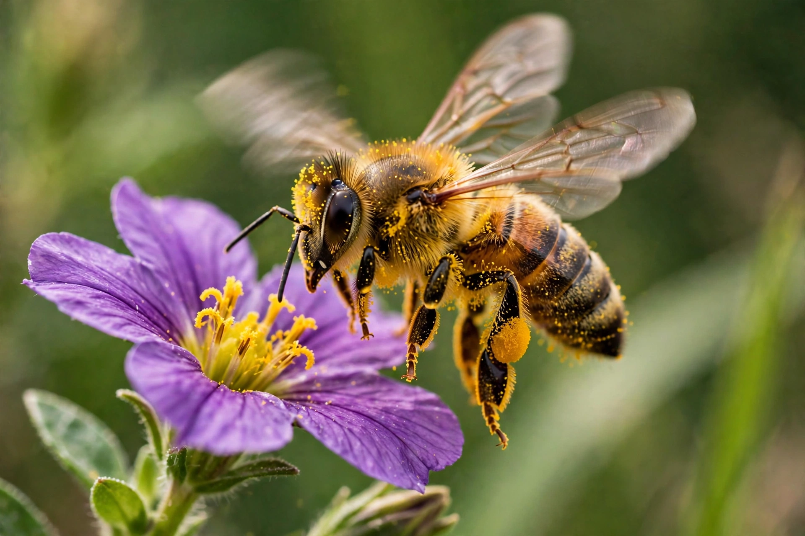

Bee

[Image: a honey bee covered in pollen on a purple flower, wings blurred in motion]Bees are winged insects closely related to wasps and ants, known for their roles as pollinators and, in the case of the best-known bee species, the western honey bee, for producing honey and for being kept by humans in hives. Over 20,000 known species of bees are found on every continent except Antarctica, in habitats that support insect-pollinated flowering plants.
Bees feed on nectar and pollen, the former for energy and the latter as protein and other nutrients for their larvae. In doing so they pollinate a large share of the world's flowering plants, including roughly a third of human food crops by volume.
Biology and social life
Most bees are solitary, but honey bees and bumblebees are social, living in colonies with a queen, female workers and male drones. Honey bee colonies communicate the location of food through the 'waggle dance', decoded by Karl von Frisch, and defend the hive with barbed stings that cost the worker her life.
Bees range from the tiny sweat bees a few millimetres long to leafcutter and carpenter bees several centimetres across. Many species nest in the ground or in hollow stems and cavities.
Bees and humans
Beekeeping (apiculture) is at least several thousand years old; honey bees are managed worldwide for honey, wax and pollination services, with hives trucked between orchards and fields. Wild bees are equally or more important for many crops.
Bee populations face pressure from habitat loss, pesticides (notably neonicotinoids), parasites such as the Varroa mite, and disease; 'colony collapse disorder' in honey bees from 2006 drew public attention and spurred pollinator-protection policies.